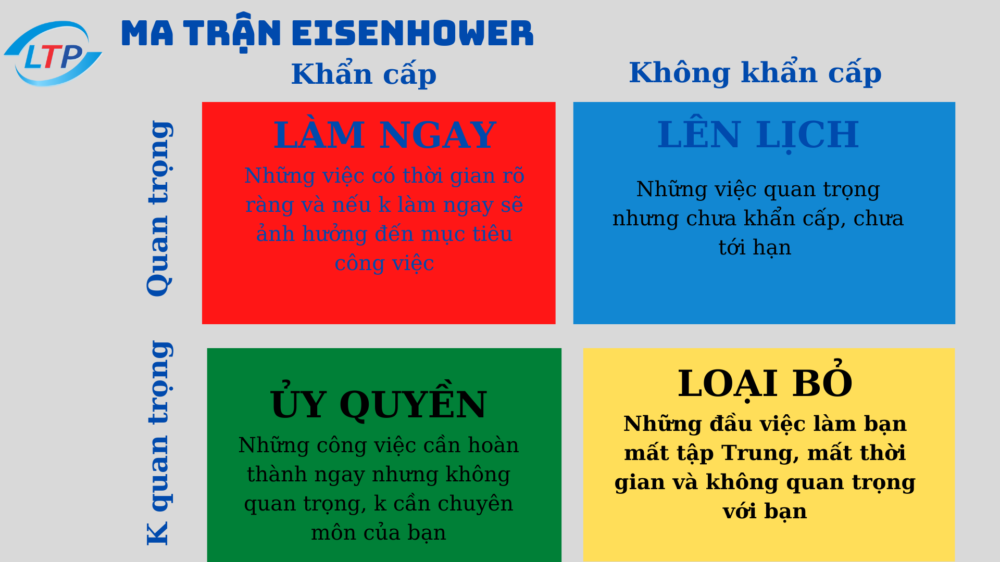

Mỗi sáng thức giấc là bạn cảm thấy căng thẳng với công việc, mọi thứ cứ rối tung lên. Bạn không biết nên làm công việc nào trước. Khi tất cả các công việc đều là ưu tiên? Làm thế nào để biết việc nào quan trọng nhất?...? Đó chính là lúc bạn cần đến ma trận quản lý thời gian Eisenhower.
Đây là một phương pháp quản lý thời gian theo tính chất công việc vì vậy ma trận này phù hợp với tất cả đối tượng, từ cá nhân đến các cấp quản lý cà chủ doanh nghiệp. Hãy cùng tìm hiểu kỹ ma trận này bạn nhé.
Tại sao gọi là ma trận Eisenhower ?

Được sáng tạo và đặt tên theo vị tổng thống thứ 34 của Hoa Kỳ : Dwight D. Eisenhower, Tổng thống thứ 34 của Hoa Kỳ và là một vị tướng năm sao trong Thế chiến II. Trong một bài phát biểu năm 1954, Eisenhower đã dẫn lời một chủ tịch đại học giấu tên khi ông nói: “Tôi có hai loại vấn đề, khẩn cấp và quan trọng. Điều khẩn cấp không quan trọng, và điều quan trọng không khẩn cấp”.
Ma trận quản lý thời gian Eisenhower, thường được gọi ngắn gọn là Ma trận Eisenhower – hay ma trận khẩn cấp quan trọng – đặc biệt hữu ích khi ta cần đưa ra quyết định cho một hành động. Nó giúp ta học cách phân biệt nhiệm vụ nào là quan trọng và nhiệm vụ nào là khẩn cấp. Buộc ta phải tự đặt ra câu hỏi liệu nhiệm vụ đó có thật sự cần thiết hay không?
Dwight liên tục phải đưa ra những quyết định khó khăn về nhiệm vụ nào trong số rất nhiều nhiệm vụ mà ông nên tập trung vào mỗi ngày. Điều này cuối cùng đã khiến ông phát minh ra nguyên tắc Eisenhower nổi tiếng thế giới, nguyên tắc ngày nay giúp chúng ta sắp xếp thứ tự ưu tiên theo mức độ khẩn cấp và quan trọng.Dựa trên hai đặc tính: tính quan trọng và tính khẩn cấp.
Ma trận Eisenhower không phải là một chiến lược hoàn hảo, nhưng là một công cụ giúp tăng hiệu quả công việc và loại bỏ những hoạt động gây lãng phí thời gian và không giúp chúng ta hoàn thành mục tiêu của mình.
Cách áp dụng ma trận Eisenhower
Áp dụng chiến lược của Eisenhower thực ra rất đơn giản. Hãy liệt kê những nhiệm vụ bạn phải làm, kể cả những nhiệm vụ không quan trọng nhưng làm mất thời gian của bạn. Sau đó sắp xếp các nhiệm vụ đó dựa trên tầm quan trọng và tính cấp thiết của chúng.
- Khẩn cấp và quan trọng (nhiệm vụ cần phải làm ngay lập tức).
- Quan trọng nhưng không phải khẩn cấp (nhiệm vụ được lên kế hoạch để làm sau).
- Khẩn cấp nhưng không quan trọng (nhiệm vụ nên bàn giao cho người khác).
- Không khẩn cấp cũng không quan trọng (nhiệm vụ phải được loại bỏ).
Điều tuyệt vời nhất của ma trận Eisenhower là nó có thể sử dụng cho cả những kế hoạch lớn (kế hoạch cho cả tuần) cũng như những kế hoạch nhỏ hơn (kế hoạch trong ngày).

Ma trận Eisenhower
Cấp độ 1 (C1): Quan trọng, khẩn cấp = LÀM TRƯỚC
Tại cấp độ này, bạn sẽ liệt kê những công việc nào vừa khẩn cấp vừa quan trọng.
Khi một công việc trong danh sách cần làm phải thực hiện ngay bây giờ, có hậu quả rõ ràng và ảnh hưởng đến mục của bạn, hãy đặt nó vào góc phần tư này.
Ví dụ : 3 loại việc cần được ưu tiên trong cấp độ này:
- Việc xảy ra không đoán trước được: Bệnh tật, nhiệm vụ bất ngờ,cuộc điện thoại quan trọng, email công việc gấp, cuộc họp khẩn cấp, báo giá gấp cho khách hàng,máy lạnh không hoạt động .…
- Đoán trước được: Cuộc họp định kỳ,cuộc họp đã lên kế hoạch, sinh nhật bạn bè, đám cưới ,tham dự sự kiện kết nối….
- Công việc vì trì hoãn để tới gần hết hạn: Làm báo cáo, làm bài thuyết trình, kiểm tra…..
Ví dụ trên chúng ta thường không tránh được trường hợp 1, 2. Nhưng với trường hợp thứ 3, hoàn toàn có thể giảm thiểu chúng bằng cách chuyển thành việc 2. Và nếu các bạn không muốn gánh nhiều áp lực thì hãy tập thói quen để xóa sổ loai việc này trong cấp độ 1.
Cấp độ 2 (C2): Quan trọng, không khẩn cấp= LỊCH TRÌNH
Ở cấp độ 2 này là những việc quan trọng nhưng chưa khẩn cấp, chưa tới hạn .
Để quản lý thời gian tốt, bạn hãy dành nhiều thời gian cho ô này. Chúng thường không khẩn cấp, nhưng sẽ tích lũy dần để giúp bạn đạt được thành tựu mong muốn.
Nếu bạn đang làm việc ở cấp độ 2 (C2) mà có việc cấp độ 1 (C1) xuất hiện thì hãy hoàn thành việc (C1) trước. Sau khi bạn giải quyết xong các việc (C1), bạn tiếp tục hoàn thành việc (C2).
Mẹo nhỏ là nên để việc C2 hình thành như một thói quen thì kế hoạch, mục tiêu của bạn dễ hoàn thành hơn.
Cấp độ 3 (C3): Không quan trọng, khẩn cấp= ỦY QUYỀN
Cấp độ này bao gồm những công việc không quan trọng nhưng chúng lại xuất hiện khẩn cấp phải được hoàn thành ngay bây giờ, nhưng chúng không ảnh hưởng đến mục tiêu dài hạn của bạn. Vì vậy, bạn có thể ủy quyền các công việc này cho các thành viên khác trong nhóm của mình. Ủy quyền là một trong những cách hiệu quả nhất để quản lý khối lượng công việc của nhà quản trị và cho nhóm của bạn cơ hội mở rộng bộ kỹ năng của họ.Nếu không thể ủy quyền , bạn hãy học cách từ chối và kết thúc lịch sự.
Cấp độ 4 (C4): Không quan trọng, không khẩn cấp=XÓA BỎ
Những công việc không quan trọng, không khẩn cấp có thể sẽ cản trở bạn hoàn thành mục tiêu của mình.
Khi bạn chuẩn bị làm 1 việc thuộc nhóm C4 hãy tự hỏi :
Công việc này có cần làm không? Việc này có giúp mình chinh phục được mục tiêu không? Chơi game này có giúp mình giải trí hơn hay mất thời gian hơn ? Mình có nhất thiết phải xem phim này không?
Mẹo để sắp xếp thứ tự ưu tiên cho công việc của bạn
- Phân bổ thời gian phù hợp với các cấp độ của ma trận Eisenhower
C1: ~15% – 20%
C2: ~60% – 65%
C3: ~10% – 15%
C4: < 5%
- Phân màu theo cấp độ cho từng công việc mà bạn phải thực hiện
Trong quá trình liệt kê công việc, bạn nên đồng thời phân loại thứ tự thực hiện các công việc theo màu.
Ví dụ:
Màu đỏ (C1)= Các mục có mức độ ưu tiên cao nhất
Màu xanh dương(C2) = Mức độ ưu tiên cao thứ hai
Màu xanh lá cây (C3)= Mức độ ưu tiên cao thứ ba
Vàng (C4)= Không phải là ưu tiên
Đã mặc định màu như vậy, bạn thấy công việc nào trong khung nàu nào là biết ưu tiên xử lý trước.
- Giới hạn số lượng nhiệm vụ cụ thể ở mỗi hạng mục
Hãy cố gắng giới hạn số lượng công việc tối đa cần phải làm ở mỗi góc phần tư là 5- 7 công việc mặc dù bạn có rất nhiều các đầu việc phải thực hiện. Việc giới hạn số lượng công việc như vậy sẽ giúp cho ma trận của bạn không bị lộn xộn, quá tải công việc.
- Tiến hành loại bỏ trước khi tối ưu hóa
Loại bỏ những công việc không cần thiết trước để có thể sắp xếp thứ tự ưu tiên một cách hiệu quả.
Với cách làm này, bạn sẽ thực hiện ở góc phần tư bốn trước.
Trên thực tế, 60% thời gian của mỗi người tại nơi làm việc được dành cho những thứ như chia sẻ phê duyệt trạng thái hoặc theo dõi thông tin. Nếu bạn có thể nhanh chóng thực hiện quá trình phân loại và lựa chọn các mục ưu tiên hãy tiếp tục và làm như vậy. Điều này sẽ đẩy nhanh quá trình sắp xếp thứ tự ưu tiên và bạn có thể sẽ trải qua vòng loại bỏ thứ hai ở mặt sau.
Tóm lại
Ma trận Eisenhower là một phương pháp quản lý thời gian phù hợp với những người có mục tiêu nhưng lúc nào cũng thấy không đủ thời gian để xử .Với Eisenhower, bạn sẽ biết cách đánh giá lại các nhiệm vụ ưu tiên của mình. Đồng thời học cách tập trung vào những gì quan trọng hơn là sự khẩn cấp giả tạo. Bạn sẽ không bao giờ phải căng mình để giải quyết một mớ công việc hỗn độn nữa.
Qua bài viết trên đã giúp chúng ta có thêm cái nhìn cụ thể hơn về Ma trận Eisenhower và cung cấp những thông tin cần thiết để có thể giúp các bạn giả sử dụng công cụ này một cách hiệu quả nhất.
www.sanpham
Contact Us:
CÔNG TY TNHH CƠ ĐIỆN LẠNH Hoàng Gia Điện Lạnh


.png)


.png)